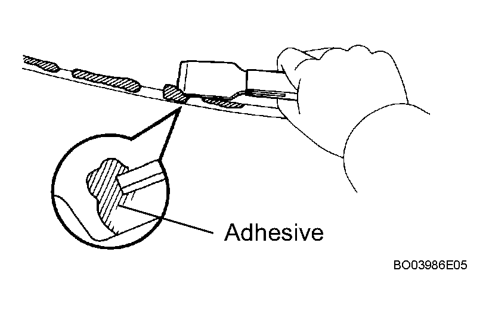

Windshield Glass: Installation
HINT:
A bolt without a torque specification is shown in the standard bolt chart (see SPECIFIED TORQUE FOR STANDARD BOLTS ).
- CLEAN WINDSHIELD GLASS
- Using a scraper, remove the damaged stoppers, dams and adhesive sticking to the glass.
- Clean the outer edges of the glass with white gasoline.NOTE: Do not touch the glass surface after cleaning it. Even if using new glass, clean it with white gasoline.
- CLEAN VEHICLE BODY
- Clean and shape the contact surface of the vehicle body.
- On the contact surface of the vehicle body, use a knife to cut away excess adhesive as shown in the illustration.
HINT:
Leave as much adhesive on the vehicle body as possible.
NOTE: Be careful not to damage the vehicle body.
- On the contact surface of the vehicle body, use a knife to cut away excess adhesive as shown in the illustration.
- Clean the contact surface of the vehicle body with cleaner.
HINT:
Even if all the adhesive has been removed, clean the vehicle body.
- Clean and shape the contact surface of the vehicle body.
- INSTALL NO. 2 WINDSHIELD GLASS STOPPER
- Apply Primer G to the installation part of the stoppers.
HINT:
If primer is applied to an area that is not is specified, wipe off the primer with white gasoline before it dries.
NOTE:- Allow the primer to dry for 3 minutes or more.
- Throw away any leftover primer.
- Do not apply too much primer.
- Install 2 new stoppers onto the windshield glass as shown in the illustration.
Standard measurement
STANDARD MEASUREMENTArea Specified Condition a 40.0 mm (1.575 in.) b 9.0 mm (0.354 in.)
- Apply Primer G to the installation part of the stoppers.
- INSTALL NO. 1 WINDSHIELD GLASS STOPPER
- Install 2 new stoppers to the vehicle body as shown in the illustration.
- INSTALL WINDSHIELD GLASS ADHESIVE DAM
- Apply Primer G to the glass where the glass adhesive dams will be installed.
HINT:
If primer is applied to an area that is not specified, wipe off the primer with white gasoline before it dries.
NOTE:- Allow the primer to dry for 3 minutes or more.
- Throw away any leftover primer.
- Do not apply too much primer.
- Remove the peeling paper from the adhesive part of the dam. Install the dam (adhesive side) to the window glass (Primer G area), but exclude the stopper areas.
Standard measurement
STANDARD MEASUREMENTArea Specified Condition a 7.0 mm (0.276 in.) b 23.5 mm (0.925 in.)
- Apply Primer G to the glass where the glass adhesive dams will be installed.
- INSTALL WINDSHIELD MOULDING OUTSIDE
- Using a brush or sponge, apply Primer G to the contact surface of the windshield glass.
HINT:
If primer is applied to an area that is not specified, wipe off the primer with white gasoline before it dries.
- Install a new windshield moulding.
- Using a brush or sponge, apply Primer G to the contact surface of the windshield glass.
- INSTALL WINDSHIELD GLASS
- Position the glass.
- Using suction cups, place the glass in the correct position.
- Check that the entire contact surface of the glass rim is perfectly even.
- Place matchmarks on the glass and vehicle body on the locations indicated in the illustration.
HINT:
- Placing matchmarks is only necessary when installing new glass. If it is the reused glass, matchmarks should already be present.
- When reusing the glass, check and correct the matchmark positions.
NOTE: Check that the stoppers are attached to the vehicle body correctly. - Using suction cups, remove the glass.
- Using a brush, apply Primer M to the exposed part of the vehicle body.
- Using a brush or sponge, apply Primer G to the contact surface of the glass.
Standard measurement
STANDARD MEASUREMENTArea Specified Condition a 7.0 mm (0.276 in.) b 23.5 mm (0.925 in.) HINT:
If the primer is applied to an area that is not specified, apply white gasoline to a clean cloth and wipe off the excess primer.
- Apply adhesive to the glass.
Adhesive:
Part No. 08850-00801 or equivalent
- Cut off the tip of the cartridge nozzle as shown in the illustration.
HINT:
After cutting off the tip, use all adhesive within the time written in the table below.
Usage time frame
USAGE TIME FRAMETemperature Usage Time Frame 35°C (95°F) 15 minutes 20°C (68°F) 1 hour 40 minutes 5°C (41°F) 8 hours - Load the sealer gun with the cartridge.
- Apply adhesive to the glass as shown in the illustration.
Standard measurement
STANDARD MEASUREMENTArea Specified Condition a 8.0 mm (0.315 in.) b 12.0 mm (0.472 in.)
- Cut off the tip of the cartridge nozzle as shown in the illustration.
- Install the glass to the vehicle body.
- Using suction cups, position the glass so that the matchmarks are aligned. Press it in gently along the rim.
- Lightly press the outer surface of the glass to ensure that it is securely fit to the vehicle body.
- Using a scraper, remove any excess or protruding adhesive.

Courtesy of © TOYOTA, LICENSE AGREEMENT TMS1002HINT:
Apply adhesive onto the glass rim.
NOTE: Do not drive the vehicle within the time written in the table below.Minimum time
TIME REFERENCETemperature Minimum time prior to driving vehicle 35°C (95°F) 1 hour 30 minutes 20°C (68°F) 5 hours 5°C (41°F) 24 hours
- Position the glass.
- INSTALL COWL TOP VENTILATOR LOUVER LH (See INSTALLATION )
- INSTALL COWL TOP VENTILATOR LOUVER RH (See INSTALLATION )
- INSTALL HOOD TO COWL TOP SEAL (See INSTALLATION )
- INSTALL FRONT WIPER ARM LH (See INSTALLATION )
- INSTALL FRONT WIPER ARM RH (See INSTALLATION )
- INSTALL FRONT WIPER ARM HEAD CAP
- INSTALL ROOF HEADLINING ASSEMBLY (See INSTALLATION )
- INSTALL VISOR HOLDER LH (See INSTALLATION )
- INSTALL VISOR HOLDER RH (See INSTALLATION )
- INSTALL VISOR ASSEMBLY LH (See INSTALLATION )
- INSTALL VISOR ASSEMBLY RH (See INSTALLATION )
- INSTALL FRONT PILLAR GARNISH LH (See INSTALLATION )
- INSTALL FRONT PILLAR GARNISH RH (See INSTALLATION )
- INSTALL ROOM NO. 1 LIGHT ASSEMBLY (See INSTALLATION )
- INSTALL ASSIST GRIP SUB-ASSEMBLY (See INSTALLATION )
- INSTALL FRONT DOOR OPENING TRIM WEATHERSTRIP LH
- INSTALL FRONT DOOR OPENING TRIM WEATHERSTRIP RH
- INSTALL INNER REAR VIEW MIRROR ASSEMBLY (See INSTALLATION )
- CHECK FOR LEAKS AND REPAIR
- Conduct a leak test after the adhesive has completely hardened.
- Seal any leaks with auto glass sealer.
- CONNECT CABLE TO NEGATIVE BATTERY TERMINAL